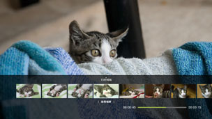
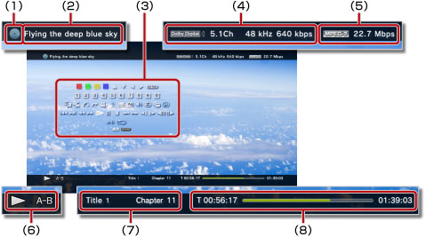

影像 > 使用操作介面
使用操作介面
使用螢幕上的操作介面，可執行各種操作。操作介面可以 按鈕設定為顯示／不顯示。
按鈕設定為顯示／不顯示。
此頁所顯示的圖示所代表的意義如下。
 |
使用唯讀Blu-ray Disc（藍光光碟）記錄的影像 |
|---|---|
 |
使用可複寫之Blu-ray Disc（藍光光碟）記錄的影像 |
 |
以AVCHD格式記錄的影像 |
 |
|
 |
使用DVD-R／DVD-RW的VR模式記錄的影像 |
 |
保存於主機儲存空間的影像檔案 |
 |
保存於儲存媒體的影像檔案* |
| * |
部分PS3™機種需於使用儲存媒體時，搭配非隨附的USB讀卡機等。 |
|---|
重要
部分內容之播放方式可能會因製作者的意圖而被預先設定。遇此情形時，操作介面的部分操作可能無效。
紅／綠／黃／藍


能執行各按鈕對應之各種機能。（機能可能因播放之內容而異。）
上／下／左／右

選擇項目。
決定
決定選擇該項目。
數字按鈕

輸入數字。
彈跳式選單
顯示彈跳式選單。
選單
顯示選單。
頂部選單
顯示頂部選單。
返回
回到該影像之特定點。
搜尋場景 


按一定間隔顯示縮圖，選擇想要觀看的場景來播放。

1. |
利用方向按鈕 |
|---|

 ，選擇縮圖的顯示間隔。
，選擇縮圖的顯示間隔。2. |
利用方向按鈕 |
|---|

 ，選擇想觀看的場景。
，選擇想觀看的場景。提示
- 沒有章的影像無法選擇［章］。
- 未滿1分鐘的影像檔案無法搜尋場景。
- 部份類型的影像可能無法搜尋場景。
- 選擇縮圖後會播放約15秒的預覽。
跳往


指定章或時間後開始播放。
| Title X | 指定標題號碼 |
|---|---|
| Chapter X | 指定章號碼 |
| XX:XX / XX:XX:XX | 指定時間 |
提示
部分影像檔案可能無法執行（跳往）操作。
變換角度
轉換在同一場景中錄製了多種角度之內容的觀看角度。
變換語音
改變錄製多重音軌之內容的播放語音。
變換字幕
變換錄製了字幕之內容的字幕語言。若該內容支援隱藏式字幕，即可選擇隱藏式字幕。
提示
- 若要顯示隱藏式字幕，需先將
 （設定）＞
（設定）＞ （影像設定）＞［隱藏式字幕］的設定調整為［開］。
（影像設定）＞［隱藏式字幕］的設定調整為［開］。 - 隱藏式字幕為僅限北美地區販賣的PS3™可選擇之設定。
變換字幕類型
變換錄製了字幕之內容的字幕顯示方式。
調整音量
設定在 （影像）播放內容時的輸出音量。可分9階段調整。
（影像）播放內容時的輸出音量。可分9階段調整。
提示
- 輸出音量若調整過高，可能會出現雜音或不協調音。此時請降低輸出音量。
- 部分設定可能因您使用之音響裝置或輸出之聲音種類而無效。
影像聲音設定
設定選擇（影像）播放內容時的畫質。顯示的項目可能因播放的內容而異。
| 幀噪音降低 | 降低細微的噪音。 |
|---|---|
| Block Noise Reduction（模糊降低） | 降低畫面上如馬賽克般的模糊現象。 |
| Mosquito Noise Reduction | 可減低於影像的輪廓部份出現的mosquito noise（雜訊）。 |
| 向上轉換 | 調整向上轉換輸出設定。 此時設定的各種數值，會即時反映至 （設定）＞（影像設定）＞[BD／DVD - 向上轉換]。 |
| 影像輸出格式 | 設定影像的輸出格式。 可選擇播放DVD或BD時的影像輸出格式。此時設定的各種數值，會即時反映至 （設定）＞（影像設定）＞[BD／DVD - 影像輸出格式(HDMI)]。 |
| Y Pb / Cb Pr / Cr Super-White | 調整Super-White的顯示設定。 播放DVD、Blu-ray Disc（藍光光碟）、或AVCHD光碟時，可輸出Super-White訊號。此時設定的各種數值，會即時反映至 （設定）＞ （顯示器設定）＞［Y Pb/Cb Pr/Cr Super-White(HDMI)］。 （顯示器設定）＞［Y Pb/Cb Pr/Cr Super-White(HDMI)］。 |
| RGB Full Range | 設定RGS Full Range顯示。 此時設定的各種數值，會即時反映至 （設定）＞（顯示器設定）＞［RGB Full Range］。 |
| 動態範圍控制 | 設定動態範圍控制。 可選擇在播放收錄了Dolby音效（Dolby Digital、Dolby Digital Plus、Dolby TrueHD）的DVD或Blu-ray Disc（藍光光碟）時的動態範圍控制設定。此時設定的各種數值，會即時反映至 （設定）＞（影像設定）＞ [BD／DVD - 動態範圍控制]。 |
| 聲音輸出格式 | 設定聲音的輸出格式。 可選擇播放DVD或BD時的聲音輸出格式。此時設定的各種數值，會即時反映至 （設定）＞（影像設定）＞[BD／DVD - 聲音輸出格式(HDMI)]或[BD - 聲音輸出格式(光纖)]。 |
變換時間顯示方式
交互顯示標題或章的已播放時間／剩餘時間。但顯示的情報可能因播放內容而異。
螢幕模式
改變螢幕顯示模式。
| 標準 | 配合螢幕尺寸顯示。 |
|---|---|
| 縮放 | 不變更縱橫比，但消除上下或左右的邊緣部份，以顯示於整個螢幕中。 |
| 全螢幕 | 變更縱橫比，往上下左右延伸，以顯示於整個螢幕中。 |
| 原始 | 依原本影像尺寸顯示。 |
提示
部分影像檔案可能會出現無法變換顯示模式的情形。
變更圖示
變更影像檔案的圖示（縮圖）。於播放影像檔案時，選擇想設定為圖示之場景（變更圖示）。
提示
- 部分影像檔案可能無法變更圖示。
- 2秒鐘以下的影像檔案無法設定圖示。
刪除
刪除正在播放的影像檔案。
顯示
顯示播放中的狀態／資訊。但顯示的情報可能因播放內容而異。

(1) |
媒體 |
|---|---|
(2) |
標題 |
(3) |
操作介面 |
(4) |
聲音Codec／頻道數／周波數／位元率 |
(5) |
影像Codec／位元率 |
(6) |
狀態圖示 |
(7) |
標題／章 |
(8) |
已播放時間／總播放時間 |
後退／前移
移動至上一章／下一章。
提示
選擇保存於儲存媒體或主機儲存空間之影像檔案時，無法選擇 （下一章）。此外，若選擇
（下一章）。此外，若選擇 （上一章）會回到該影像檔案之起始處。
（上一章）會回到該影像檔案之起始處。
快退／快進
快退／快進。每次按下 按鈕，都會改變播放的速度。
按鈕，都會改變播放的速度。
提示
可使用無線控制器的右操作桿執行快退／快進，且能以操作方式控制速度。播放Blu-ray 3D™的影像時，無法以右操作桿控制速度。
播放
播放內容。
提示
再度播放之前曾經播放但中途停止的影像時，通常會從上一次播放的位置起繼續播放。若想從起始處開始播放，需按下PS按鈕結束播放並開啟XMB™。選擇圖示後按下按鈕，開啟選項選單並選擇［從起始處開始播放］。
暫停
暫停播放。
停止
停止播放。
閃略（－）／閃略（＋）
移動至15秒前或15秒後的影像。
慢退／慢進
慢動作播放。
停格（後退）／停格（前移）
以1格為單位播放。
A-B重複
反覆播放指定的部分。
1. |
在想要重複播放的起點，選擇 |
|---|---|
2. |
在想要重複播放的終點按下 |
提示
若想解除A-B重複，請選擇（A-B重複）。
重複
重複播放。
提示
若想解除重複播放，請連續選擇（重複）直到顯示［重複 關］。